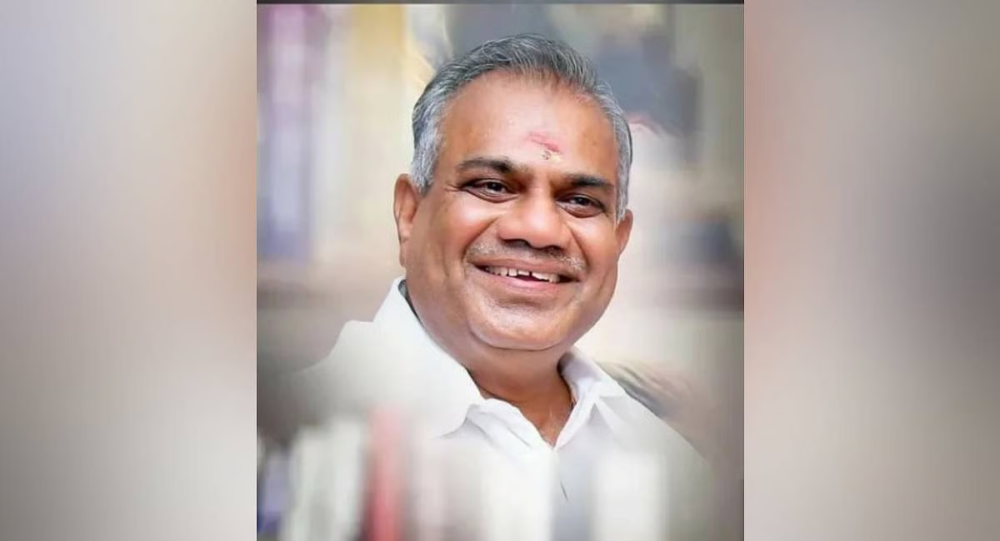
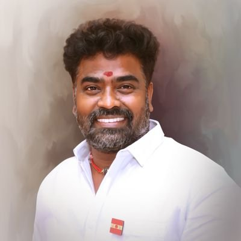
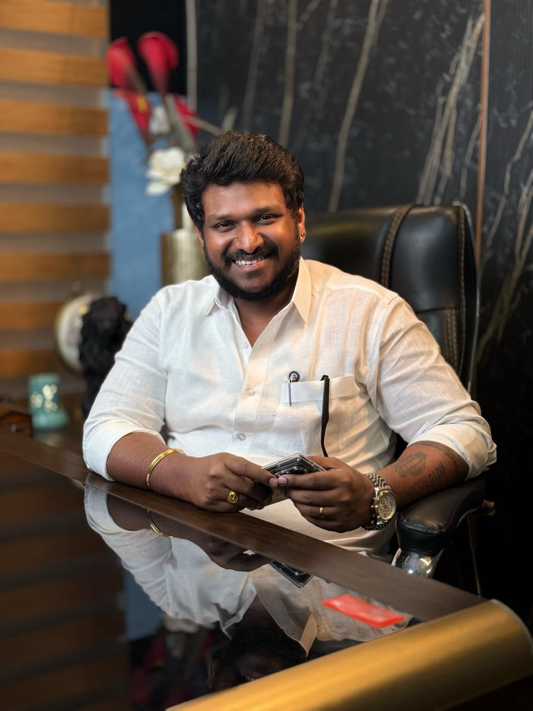
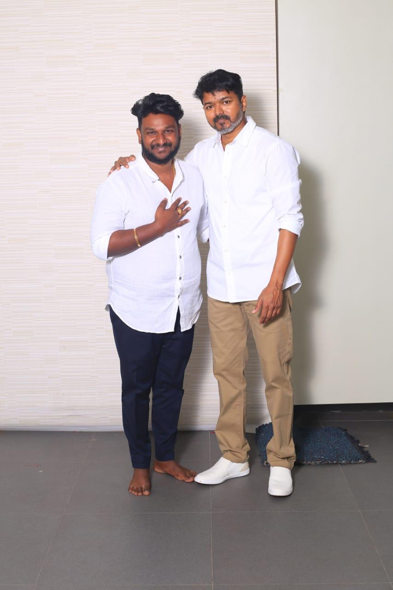
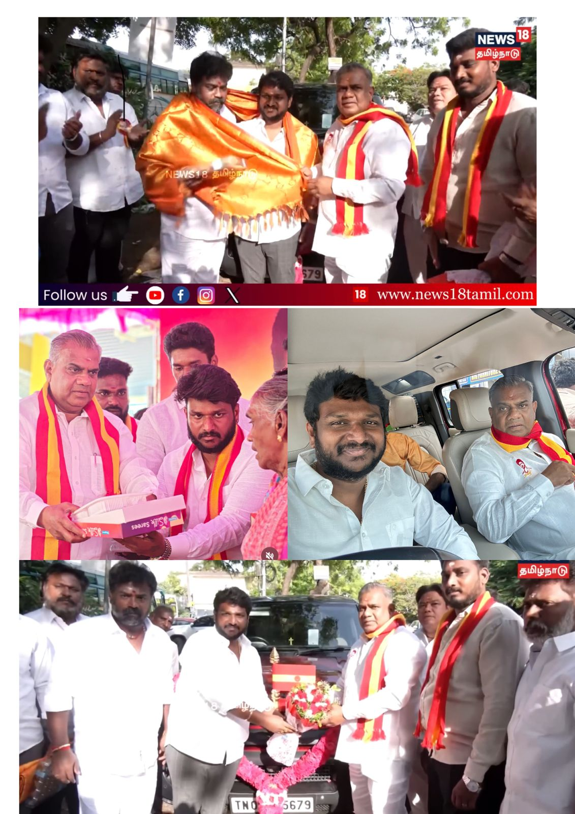
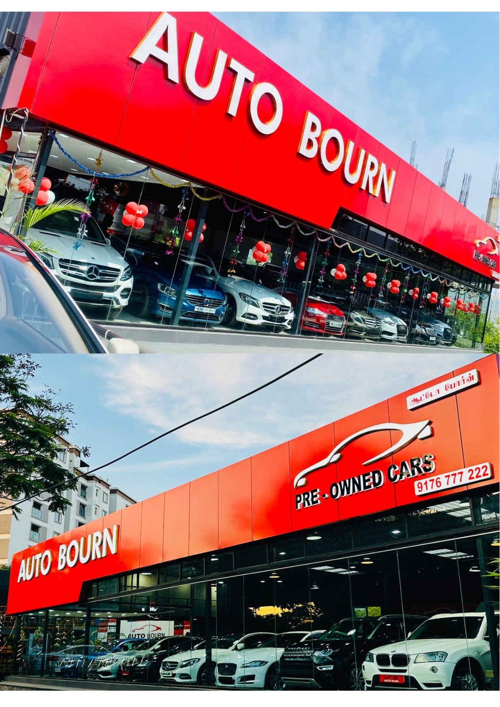
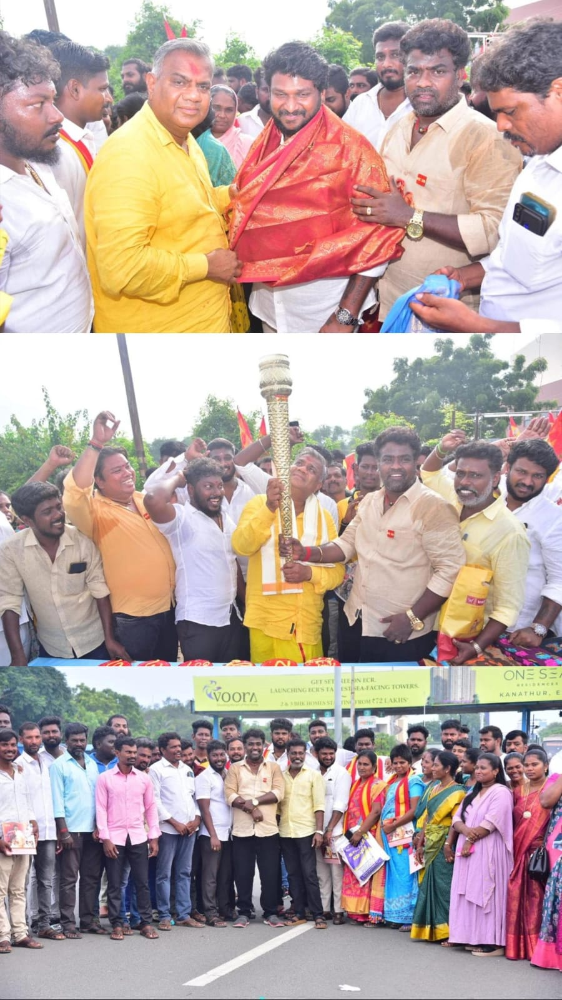
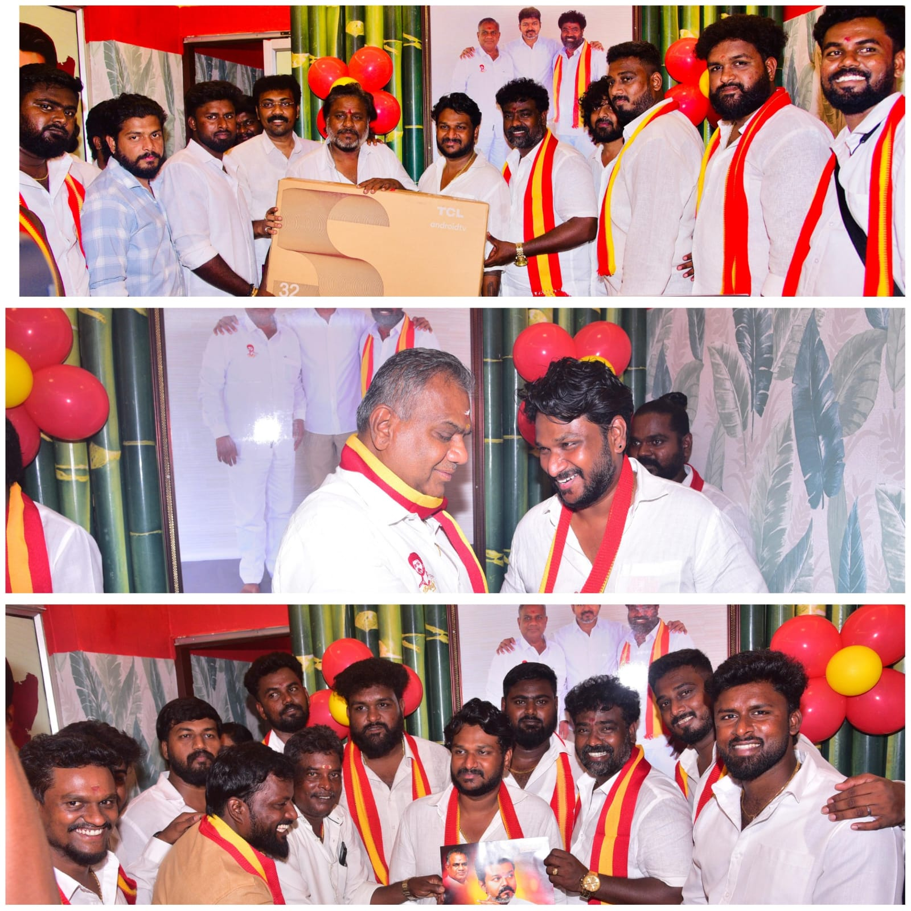
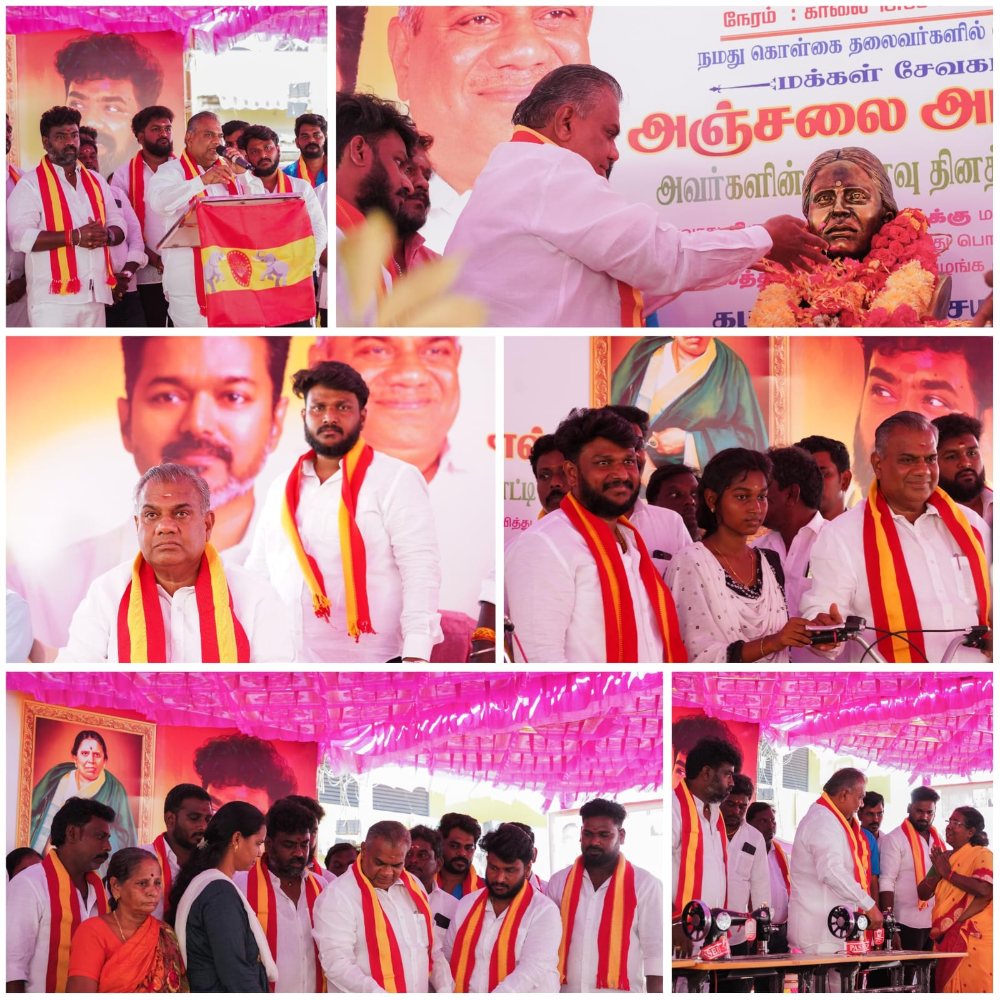
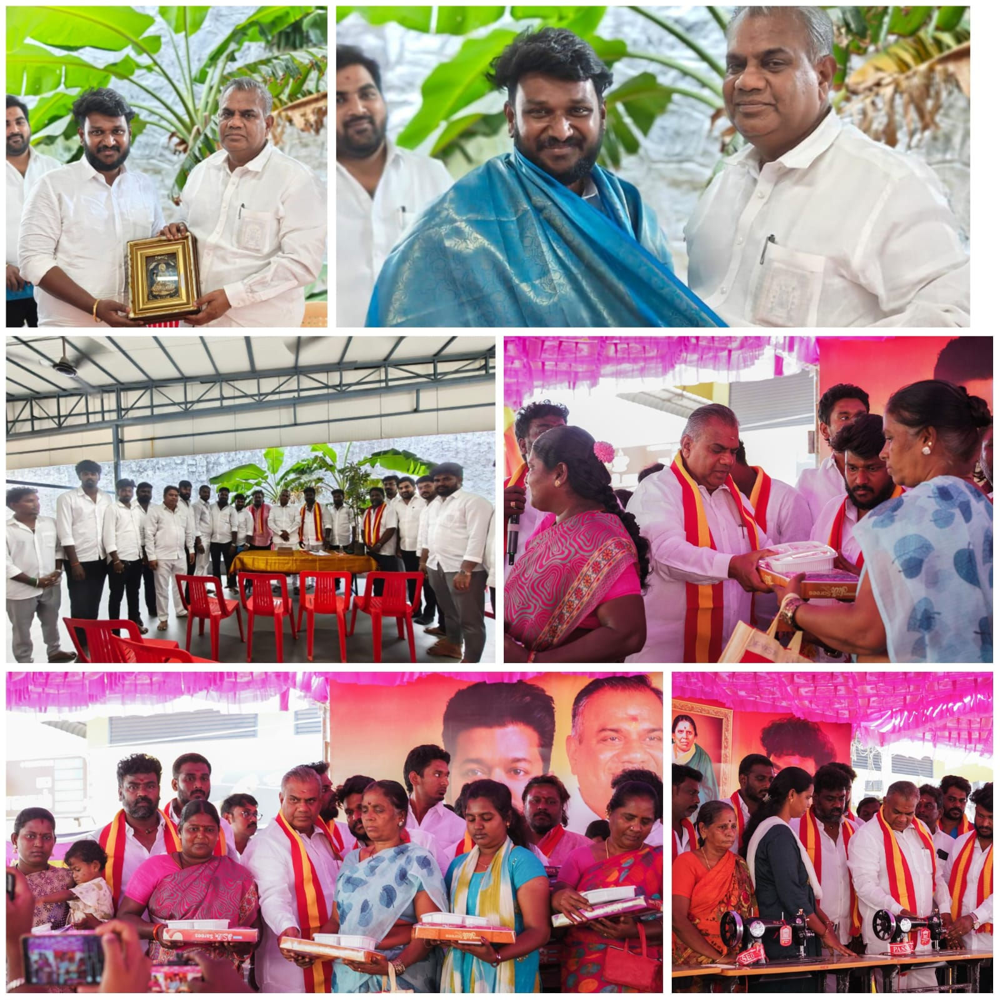

Mr. S. Prasanna
A dynamic entrepreneur and committed social activist with a deep commitment to public welfare. Leading with professional excellence and grassroots involvement.
Core Philosophy
Service with Commitment. Leadership with Responsibility. Politics with Purpose.
Committed Service
15+ years of trusted leadership in business and grassroots social involvement.
People Mobilization
Proven capability in organizing mass gatherings and membership drives for TVK.
Accountability
A firm belief that leadership must be action-driven, transparent, and people-centric.
Public Welfare
Dedicated to youth employment, infrastructure, and immediate grievance resolution.








Who We Are
A Leader Rooted in People
Mr. S. Prasanna is a 35-year-old entrepreneur and TVK member from Velachery, Chennai. As the founder of AUTO BOURN, he has spent over 15 years building trust through service — first in business, now in public life.
His campaign is built on one belief: that genuine leadership means being present, being accountable, and delivering real change to every household in the constituency.
- Grassroots campaigner with direct community ties
- 500+ TVK membership enrollments personally driven
- Organised 50+ welfare and healthcare programmes
- Committed to youth, women, and senior citizen welfare
15+
Years in Business
5000+
Vehicles Sold
500+
TVK Members Enrolled
50+
Welfare Programmes
Our Agenda
Campaign Priorities
Six areas where we will deliver measurable change from day one.
Youth Employment
Creating local job opportunities and skilling programs for young people in Chennai.
Digital Access
Bridging the digital divide with free internet hubs and tech literacy drives.
Infrastructure
Faster roads, reliable water supply, and smart street lighting in every ward.
Healthcare for All
Free medical camps and government health scheme facilitation across the constituency.
Women Safety
Strict monitoring of women safety and empowerment through SHG support networks.
Senior Citizen Support
Expedited pension processing and dedicated helpdesks for senior citizens.
What People Say
Voices of the Constituency
"Mr. Prasanna has always been the first to respond in times of need. His genuine care for the people is unmatched."
Become a Member of TVK Movement
Join hands with Prasanna TVK to bring real change to Tamil Nadu. Your participation is the foundation of our success.